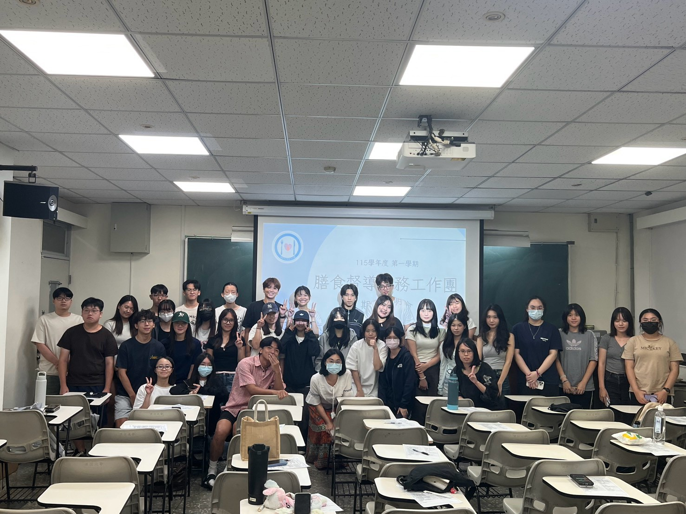
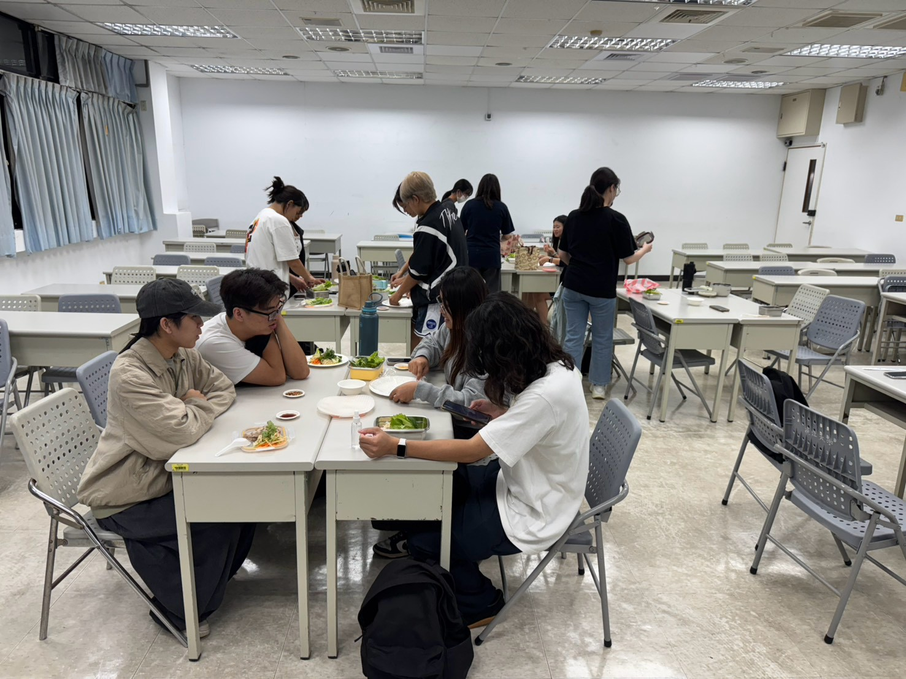
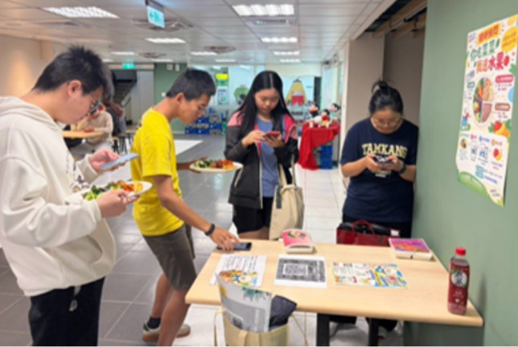

📸 活動照片

活動照片 1 — 學餐衛生稽核實錄
請放入圖片：images/slide1.jpg

活動照片 2 — 健康飲食 DIY 社課
請放入圖片：images/slide2.jpg

活動照片 3 — 期初說明會大合照
請放入圖片：images/slide3.jpg
📢 最新消息
📅 行事曆
- 9/22 期初說明會
- 9/29－10/30 學餐檢查（一）
- 10/20 健康飲食 DIY（一）
- 11/2－12/18 學餐檢查（二）
- 11/24 健康飲食 DIY（二）
- 12/15 期末社員大會
📌 聯絡資訊
🌱 社團簡介
淡江大學膳食督導義務工作團（Diet Supervisory Volunteers Club）隸屬於淡江大學服務性社團，最早於民國 85 年成立。在學校學務處衛生保健組與專業營養師的指導下，長期協助執行校園餐廳、飲食品質的衛生檢查與監督，秉持把關食安、服務校園的精神，維護優質且衛生的校園用餐環境。
🎯 社團宗旨
促進本校餐廳重視食品，包含餐廳、餐具、炊具、設備等之清潔衛生，以確保全校教職員生之飲食安全；同時提倡健康食品觀念，提供更完善的飲食空間，並推廣在簡單料理過程中學會吃得健康與營養。
🛡️ 社團專業
監督校園餐廳衛生安全
定期巡檢校園餐廳與把關食安。
為師生飲食健康發聲，參與校園公共事務。
掌握衛生檢查重點，提升溝通與觀察力。
✨ 社團願景
透過健康講座、健康飲食 DIY 等活動，讓全校師生培養健康飲食的好習慣。
📍 社辦位置
📋 檢查組別
餐飲衛生組
針對與學校配合的廠商及學餐環境、食材、人員衣著等項目進行檢查。
食材檢查組
負責把關食材有效期限、存放溫度與生熟食分離。
餐具及油炸油檢查組
負責抽查餐具清洗潔淨度，並領取特殊試紙檢測油炸油老化程度。
過氧化氫檢查組
領取特殊試紙抽驗麵條與豆製品，確保高風險食材無違法殘留漂白殺菌劑。
🗺️ 檢查地點（A～E 區）
宜廷麻油雞、婷婷美食、傳香飯糰、早安美廣、港式美食
松濤館販賣機、美廣全家、元甫素食、美廣水果
琪美食堂、八方雲集、洗碗間、美廣自助餐
迦南餐廳、古今中外、藍白小鎮
覺軒花園餐廳、小木屋鬆餅、會文館全家
測驗完成！你的成績
🔍 學餐檢查
- 01 本學期共計 10 次，分為學餐檢查（一）9/29－10/30（5 次）與學餐檢查（二）11/2－12/18（5 次）。
- 02 每日檢查時段為週一至週五 09:00－11:00、13:00－17:00，務必避開用餐尖峰時段（11:30－13:00）。
- 03 期中考週（11/9－11/20）、期中考前一週、期末考及期末考前一週暫停檢查；遇國定假日與颱風假亦不須補班。
- 04 執勤時間自訂、無遲到原則；缺席無須請假但不可代班，事後任一時段補班即可。
🍳 社課活動
社課時間為週二晚上，由幹部舉辦 DIY 活動或講座課程，詳細時間、地點與內容另於 IG 社帳及 LINE 群組通知。
💡 活動須知
• 參與健康飲食 DIY 活動不需額外繳交材料費，請自備環保餐具。
• 若有飲食禁忌或食物過敏，可於活動參與調查表中備註，或私訊社團 IG（@tkusdt_club）告知。
📝 如何入社
• 參加每學期第一次社課「期初說明會」，聽完後有意願的同學現場繳交社費、填寫檢查班表與個人資料，即完成入社並加入社員 LINE 群組。
• 社費每學期新臺幣 200 元；於第一次學餐檢查前提出退社可退費 100%，開始檢查後退社則不予退費。
🌟 有甚麼好處
彈性利用課餘時間
不需佔用太多晚上休息時間，利用課餘時間即可完成，每次檢查約 1 小時。
社課負擔輕鬆
依學校規定僅需參加一次幹部舉辦的社課。
全勤獎勵金 500 元
整學期學餐檢查全勤，可獲得新臺幣 500 元獎勵金。
🏅 認證怎麼拿
全勤學餐檢查（一）5 次、全勤學餐檢查（二）5 次、參與任一次幹部舉辦的 DIY 社課。
全勤整學期 10 次學餐檢查或擔任衛保組活動工作人員，以及擔任社團幹部也可以。

嗨嗨～我是膳膳！🍱 淡江大學膳督團的專屬小幫手。想知道怎麼加入社團、學餐檢查都在做什麼，或是想了解健康飲食 DIY 活動，都可以問我喔！✨
✉️ 聯絡我們
有任何關於入社、學餐檢查或合作的問題，歡迎填寫表單與我們聯繫！